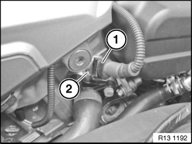
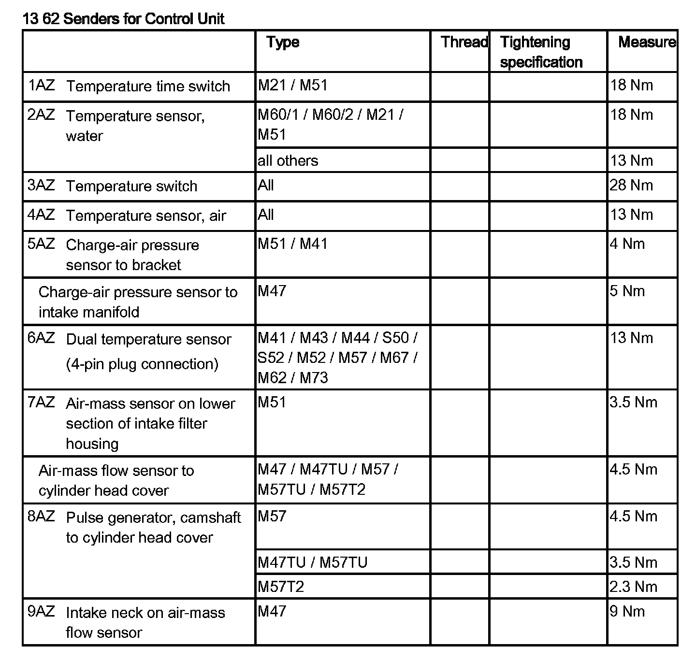
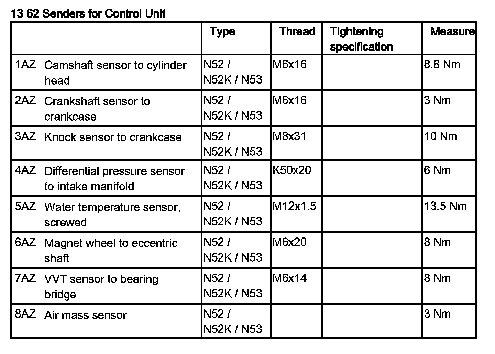
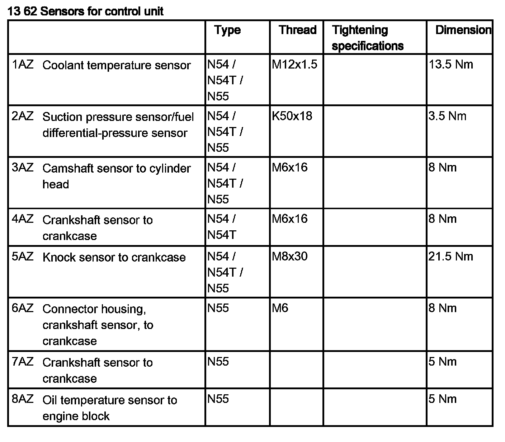

Coolant Temperature Sensor/Switch (For Computer): Service and Repair
13 62 531 Replace Coolant Temperature Sensor (N52, N52K, N53)

WARNING:
Risk of scalding.
Only perform this repair work on an engine that has cooled down.

Recycling:
Catch and dispose of escaping coolant.
Observe country-specific waste disposal regulations.

Necessary preliminary work:
- Read out DME control unit fault code memory.
- Switch off ignition.
- Remove acoustic cover

Coolant temperature sensor for coolant is mounted on cylinder head at front.
Release connector (1) and remove.
Loosen outside temperature sensor (2).
Installation note:
Tightening torque 13 62 2AZ.
If necessary, top up coolant.
Check cooling system for leaks.

NOTE: Delete fault memory.


